¿COMO ABRIR LOS PUERTOS DEL EMULE E WINDOWS?
-
Configuracion, del firewall del Windows Xp, para su correcta, integracion con el eMule.
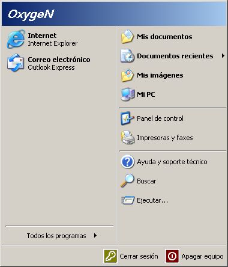
-
Despues entraremos en , y nos saldra, la ventana del panel de control, y nos iremos a , entraremos en Conexiones de red, y nos saldra una carpeta con todas nuestras conexiones, pues bien haremos clic, con el boton derecho, y nos aparece el menu contestual :
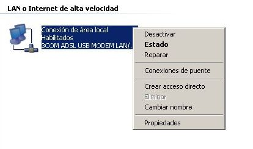
-
Pues bien en ese menu contestual, no iremos a Propiedades, y nos saldra la siguente ventana :
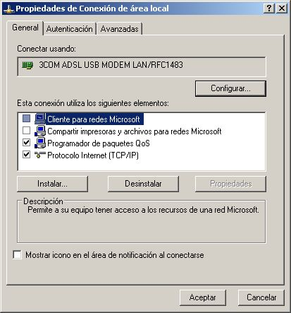
-
Antes de configurar el firewall se recomienda, que
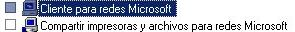
, esten desactivadas, por seguridad, bien una vez echo esto, nos iremos a la pestaña Avanzadas :
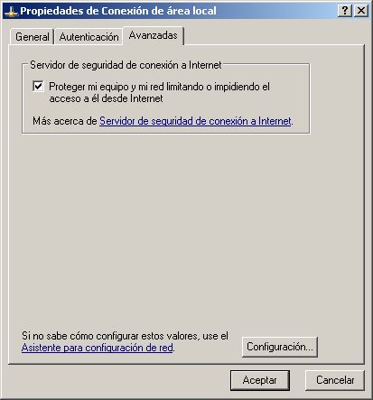
-
Activamos la pestaña, Servidor de seguridad de conexion a internet, tal y como aparece en la foto, una vez activado, el boton de Configuracion se nos pondra operativo, pues bien, le pulsamos y entraremos en otra ventana :
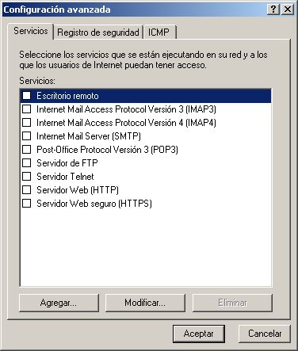
-
Como podemos apreciar, podemos proteger mas puerto, pero los que se usan para el eMule, no estan, asi que no iremos, al boton de Agregar, hacemos clic, y nos abre la siguente ventana :
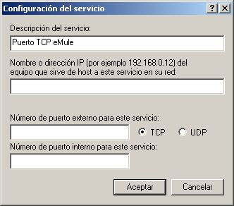
-
Pues bien, recordar que los puertos del eMule al igual que los del eDonkey, son 4661 y 4662, para el TCP, 4672, para el UDP, sabiendo esto, en la ventana que nos abre, el la Descripcion del servicio, yo e puesto "Puerto TCP eMule", esto al gusto del consumidor, veamos ahora el siguiente paso :
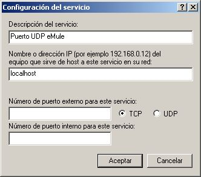
-
En la casilla de, Nombre o direccion IP, debemos de poner "localhost", tal y como aparece, en la imagen, el porque, pues muy sencillo, el solo nos colorara despues, nuestro nombre de IP, tambien se puede apreciar que en todo momento esta marcado el TCP, ahora el siguiente paso es poner el numero del puerto
-
Una vez, colocado el numero del puerto, 4662, en los dos rangos de escritura, solo deberemos Aceptar, y hacer el mismo proceco,con el puerto UDP, pero cambiando la pestaña TCP, por UDP, y colocando el numero de puerto 4672 :
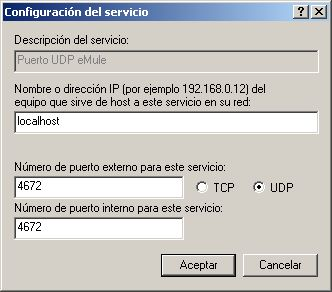
-
Una vez echo en los dos puertos, pues simplemente, miraremos que esta todo correcto, en la ventana principal :
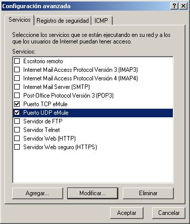
-
como se puede apreciar, estan los dos puertos, activados, pues bien Aceptamos, nuevamente, y para saber si esta todo, bien, en su sitio, en la ventana de Conexiones de red, nos saldra con un pequeño candado el dibujito :
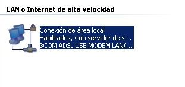
-
Recordar lo siguiente :
4661 (remoto/saliente) TCP Para conectar con los servidores
4662 (local/entrante) TCP Para conectar con otros usuarios
4665 (remoto/saliente) UDP Para encontrar fuentes en otros servidores
4672 (remoto/salida) UDP Para encontrar fuentes en otros servidoresY que los puertos por defecto del eMule son 4662 TCP y 4672 UDP, las pruebas se han echo con estos dos puertos, al ser los puertos por defecto, pero si de todas formas no os fiais, probar a proteger esos puertos, de la misma manera que se han protegido los demas...
Andaluzsoy